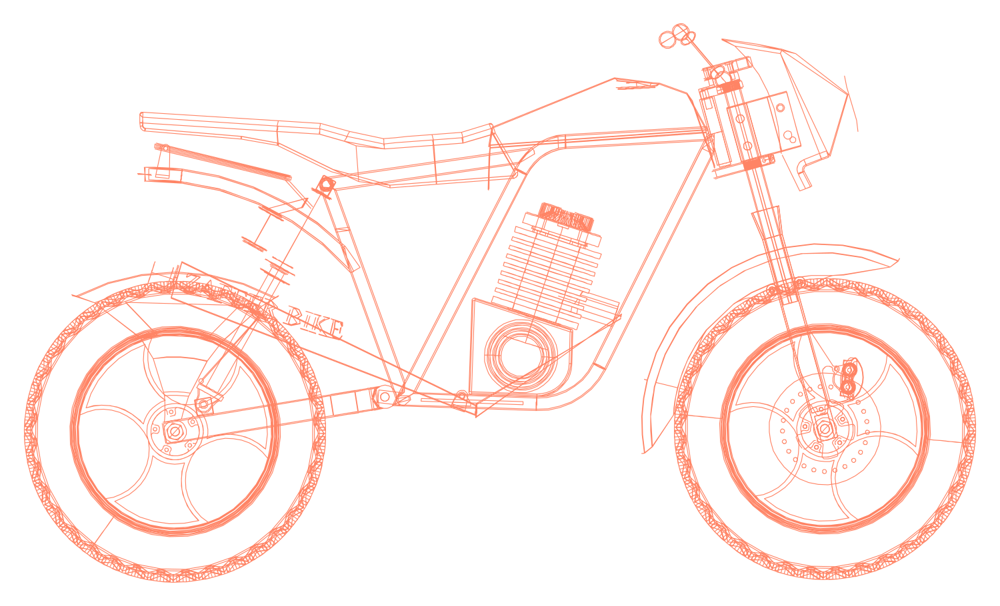

01 / Mechanical design
Motorcycle assembly
Thirty components modelled part by part, mated into three subassemblies and one top level assembly, then documented in thirty dimensioned drawings with section and detail views. Weldments for the frame, surfacing for the 2 mm thin-wall fuel tank, and cast-part detailing on the crank case cover.
30unique components
Explore project ↗